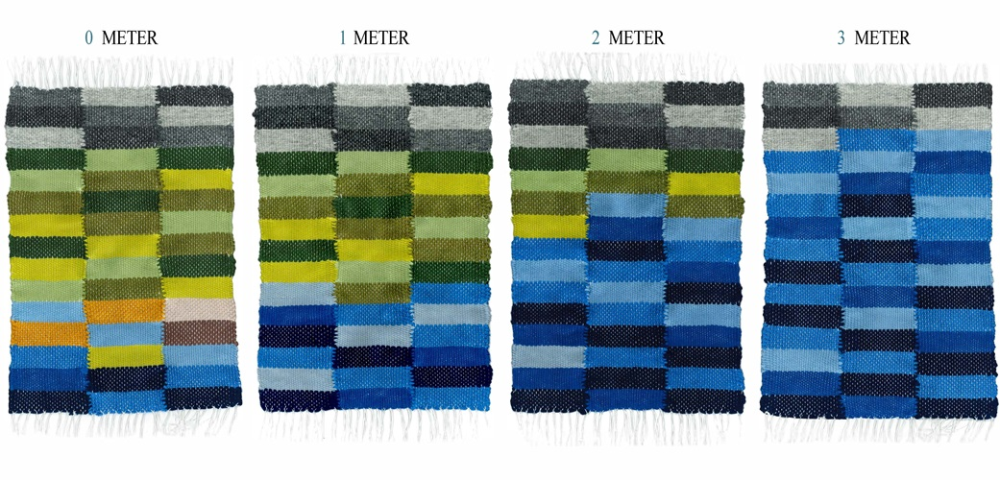
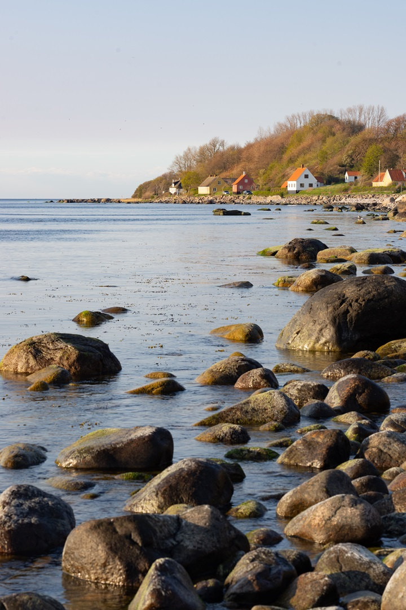

Coastal perspectives
Donavit outside
We know that sea levels will rise and low-lying coastal landscapes will face increased erosion and flooding. But the magnitude of the rise in sea level is uncertain. Forecasts differ greatly. By 2100, sea level rise could be somewhere between three decimetres and three metres. On top of the rising mean sea level, temporary storm surges may further elevate the water level by a couple of metres.
Nevertheless, many municipalities are planning new settlements in low-lying coastal areas. For example, both Malmö and Helsingborg are converting former port areas into residential areas. What sea level rise should be planned for, and what risks should society accept? And what time perspectives are needed?
One way to manage these uncertainties and risks is through a step-by-step adaptation. Measures that protect in the short term can be combined with spatial planning that allows for further measures in the future. At some point, low-lying coastal settlements will have to be abandoned. Could we already plan for buildings and infrastructure to be moved?
For new settlements, we can plan and build in a smart and flexible way. But what about the existing settlements in risk-prone areas?
Welcome inside Donavit!
Donavit inside
Along the coast of Skåne, individual property owners currently protect their houses with stone, concrete, and sheet piling. Beaches are eroded, valuable habitats for animals and plants disappear, and public access to the coast is limited.
If these measures were coordinated over a larger area, more aspects than the protection of individual houses could be taken into consideration, allowing for more sustainable solutions. However, with the current division of responsibilities and legislation, such coordination is difficult. Even if coordination were possible, some long-term climate adaptation measures, such as embankments or realignment, might be difficult for residents to accept.
In some cases, the coastal protection itself might threaten the values it is designed to protect. For existing settlements, it is therefore wise to plan with shorter time perspectives and gradual adaptation. Beach nourishment is an example of a measure that has a limited impact on the environment and may be easier to accept. As flood risks increase, so will also the acceptance of more pervasive climate adaptation measures.
To enable sustainable coastal climate adaptation, we need to think innovatively together. Planning and measures should be based on a clear vision grounded in shared priorities, with a preparedness to revisit decisions as risks evolve.
Canvas


Donavit ute
Att havet kommer att stiga och att låglänta kustlandskap därför kommer att drabbas av ökad erosion och översvämningar, det vet vi. Men hur stor havsnivåhöjningen blir är osäkert. Prognoserna skiljer sig mycket åt. För år 2100 kan det handla om någonstans mellan tre decimeter och tre meter. Men hur stora översvämningar blir beror också på tillfälliga högvatten på ytterligare upp till ett par meter.
Ändå planerar många kommuner ny bebyggelse i låglänta, kustnära områden. Exempelvis byggs det i både Malmö och Helsingborg bostäder i tidigare hamnområden. Vilken havsnivåhöjning ska det planeras för och vilka risker kan samhället acceptera? Och hur långa tidsperspektiv behövs?
Ett sätt att hantera dessa osäkerheter och risker är genom en stegvis anpassning där åtgärder som skyddar på kort sikt kombineras med en planering där handlingsutrymmet för mer omfattande och långsiktiga åtgärder bevaras. Vid någon tidpunkt kommer kustnära bostadsområden att behöva överges. Kanske kan vi redan idag planera för att bebyggelse och infrastruktur kan flyttas.
För ny bebyggelse har vi möjlighet att planera smart och flexibelt. Men vad ska hända med alla de hus som redan ligger i riskområden?
Välkommen in!
Donavit inne
Utmed Skånes kust ser vi idag hur enskilda fastighetsägare skyddar sina hus med sten, betong och stålspont. Stränder förstörs, viktiga levnadsmiljöer för djur och växter försvinner, och allmänhetens tillgång till kusten begränsas.
Det vore mer hållbart om åtgärderna samordnades över ett större område, och tog hänsyn till fler aspekter än skyddet av enskilda hus. Men med dagens ansvarsfördelning och lagstiftning är en sådan samordning svår att genomföra. Och även om det vore möjligt, kan en del långsiktiga klimatanpassningsåtgärder, såsom invallning eller förflyttning av bebyggelse, vara svåra att acceptera för de boende.
Det innebär att det som de boende värdesätter kan komma att hotas av de skydd som byggs. Därför kan det också för den befintliga bebyggelsen vara klokt att arbeta med kortare tidsperspektiv och en stegvis anpassning. Strandfodring är ett exempel på en åtgärd som har en mindre påverkan på omgivningen och som därmed kan vara lättare att acceptera. Allteftersom riskerna för översvämning ökar kommer en acceptans för mer omfattande åtgärder att växa fram.
För att möjliggöra en hållbar klimatanpassning av kusten behöver vi tänka nytt, tillsammans. Planering och åtgärder behöver utgå från en tydlig vision baserad på gemensamma prioriteringar och en beredskap för att de avvägningar som gjorts kommer att behövas göras om allteftersom riskerna förändras.